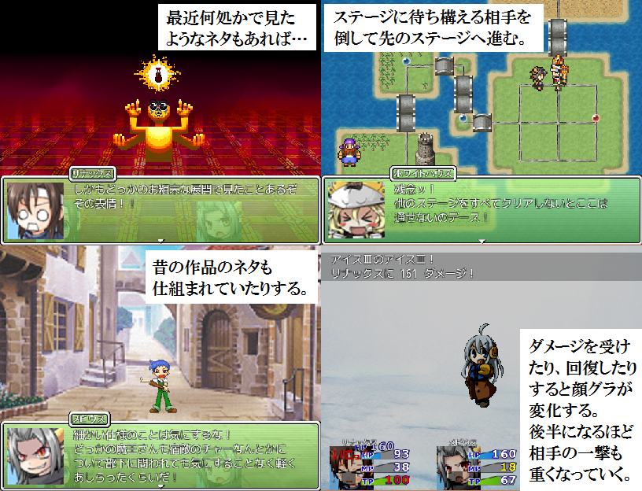

保存資料：2019-03-31の公開ページを再生しています。原HTMLと画像の載荷は保存済みです。
 |
|
| 作者：suica | |
| ツクール：VXAce | |
| ジャンル：中編やるゲ(デフォ戦) | |
| 配信/投稿：可能/可能 | |
| 作者コメント： VIPRPG初作品になります。 アレックスの提案により、リナックスとメビウスによる「魔王把握」という名の連戦の旅が始まった。 魔王城に辿り着くまでに今回の提案の事を聞いて協力してくれたたくさんのキャラが彼女達に立ち塞がる……。 5/11追記 遅刻提出致しました。ゲームプレイ時間目安は約8時間です。 5/15追記 掲示板でご指摘いただいたバグやミスの修正などを行いました。 5/25追記 本体更新を行いました(Ver.1-4) ・おまけバトル＋おまけストーリー4つ追加 ・雑魚敵の弱体化及び一部相手の調整 ・味方の技習得レベル及び技の消費TP調整 ・他作品の小ネタ大量追加 |
|
| 管理人コメント： VX(A)の解像度は加工に難儀しますよね。 |
|
| ダウンロード(93.7MB) / 感想掲示板 | |
| 前の作品 / 次の作品 / TOPへ戻る | |